주택관리사보-1차 (2021-07-10 기출문제)
1과목: 민법
1. 채권적 청구권에 해당하는 등기청구권을 모두 고른 것은? (다툼이 있으면 판례에 따름)[지문수정 ㄷ. 점유취득시효완성자의 소유자에 대한 소유권 이전등기청구권]
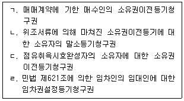
- ㄱㄴ
- ㄴㄷ
- ㄷㄹ
- ㄱㄴㄹ
- ㄱㄷㄹ
(정답률: 알수없음)

2. 법원(法源)에 관한 설명으로 옳지 않은 것은? (다툼이 있으면 판례에 따름)
- 민사에 관하여 법률과 관습법이 없는 경우에는 사실인 관습에 의한다.
- 법률의 규정을 집행하기 위해 세칙을 정하는 집행명령이 민사에 관한 것이면 민법의 법원이 된다.
- 관습법이 사회질서의 변화로 인하여 적용 시점의 전체 법질서에 반하게 된 때에는 법적 규범으로서의 효력이 부정된다.
- 관습법은 당사자의 주장·증명이 없더라도 법원(法源)이 직권으로 이를 확정하여야 한다.
- 헌법에 의해 체결·공포된 조약 중 민사에 관한 것은 민법의 법원이 된다.
(정답률: 알수없음)
3. 신의성실의 원칙(이하 '신의칙')에 관한 설명으로 옳지 않은 것은? (다툼이 있으면 판례에 따름)
- 세무사와 의뢰인 사이에 약정된 보수액이 부당하게 과다하여 신의칙에 반하는 경우, 세무사는 상당하다고 인정되는 범위의 보수액만 청구할 수 있다.
- 계속적 보증계약의 보증인은 주채무가 확정된 이후에는 사정변경을 이유로 보증계약을 해지할 수 없다.
- 병원은 입원계약에 따라 입원환자들의 휴대품이 도난되지 않도록 할 신의칙상 보호의무를 진다.
- 인지청구권은 포기할 수 없는 권리이므로 실효의 원칙이 적용되지 않는다.
- 관련 법령을 위반하여 무효인 편입허가를 받은 자에 대하여 오랜 기간이 경과한 후 편입학을 취소하는 것은 신의칙 위반이다.
(정답률: 알수없음)
4. 물건을 분류할 때 연결이 옳은 것은?
- 등유 - 소비물
- 황소 - 가분물
- 자동차 - 집합물
- 유명화가의 특정작품 - 대체물
- 아편 – 융통물
(정답률: 알수없음)
5. 형성권에 해당하는 것을 모두 고른 것은? (다툼이 있으면 판례에 따름)
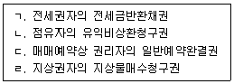
- ㄱ, ㄴ
- ㄱ, ㄹ
- ㄴ, ㄷ
- ㄴ, ㄹ
- ㄷ, ㄹ
(정답률: 알수없음)
6. 토지소유권의 범위에 포함되는 것은? (다툼이 있으면 판례에 따름)
- 지중(地中)에 있는 지하수
- 지상권자가 식재한 수목
- 완성된 미등기건물
- 바다
- 명인방법을 갖춘 미분리과실
(정답률: 알수없음)
7. 미성년자가 단독으로 행한 행위 중 제한능력자의 행위임을 이유로 취소할 수 있는 것은?
- 만 17세 5개월 된 자의 유언행위
- 대리권을 수여받고 행한 대리행위
- 법정대리인의 허락을 얻은 특정한 영업행위
- 시가 300만원 상당의 물품을 100만원에 매수한 행위
- 미성년자가 속임수를 써서 자신을 능력자로 상대방이 오신하게 하여 이루어진 법률행위
(정답률: 알수없음)
8. 부재와 실종에 관한 설명으로 옳은 것은? (다툼이 있으면 판례에 따름)
- 생존하고 있음이 분명한 자는 부재자가 될 수 없다.
- 법원이 선임한 부재자의 재산관리인은 일종의 법정대리인이므로 자유로이 사임할 수 없다.
- 법원이 선임한 부재자의 재산관리인은 법원에 의한 별도의 허가가 없더라도 부재자의 재산에 대한 처분행위를 자유롭게 할 수 있다.
- 실종선고를 받은 자가 종전의 주소에서 새로운 법률행위를 하기 위해서는 실종선고를 취소하여야 한다.
- 잠수장비를 착용하고 바다에 입수한 후 행방불명되었다고 하여 이를 특별실종의 원인되는 사유에 해당한다고 할 수 없다.
(정답률: 알수없음)
9. 권리능력에 관한 설명으로 옳지 않은 것은? (다툼이 있으면 판례에 따름)
- 자연인의 권리능력을 제한하는 약정은 무효이다.
- 반려동물은 위자료 청구권의 귀속주체가 될 수 없다.
- 태아는 증여와 유증에 관하여 이미 출생한 것으로 본다.
- 사산한 태아에게는 포태시 그에게 가해진 불법행위에 대한 손해배상청구권이 인정되지 않는다.
- 2인 이상이 동일한 위난으로 사망한 경우에는 동시에 사망한 것으로 추정한다.
(정답률: 알수없음)
10. 민법상 법인에 관한 설명으로 옳은 것은? (다툼이 있으면 판례에 따름)
- 재단법인은 항상 비영리법인이다.
- 사단법인 설립행위는 법률행위이므로 특별한 방식이 요구되지 않는다.
- 사단법인은 주무관청의 허가 없이 자유롭게 설립할 수 있다.
- 재단법인 설립행위는 단독행위이므로 출연자라 하더라도 착오를 이유로 출연의 의사표시를 취소할 수 없다.
- 법인이 목적 이외의 사업을 하더라도 주무관청은 설립허가 자체를 취소할 수 없다.
(정답률: 알수없음)
11. 민법상 사단법인과 재단법인에 공통된 해산사유가 아닌 것은?
- 파산
- 설립허가의 취소
- 법인의 목적달성
- 총 사원 3/4 이상의 해산결의
- 정관에 기재한 존립기간의 만료
(정답률: 알수없음)
12. 민법상 법인의 기관에 관한 설명으로 옳지 않은 것은? (다툼이 있으면 판례에 따름)
- 사단법인은 감사를 두지 않을 수 있다.
- 이사의 대표권에 대한 제한은 이를 정관에 기재하지 아니하면 그 효력이 없다.
- 사원총회에서 사단법인과 어느 사원과의 관계사항을 의결하는 경우에는 그 사원은 결의권이 없다.
- 사원총회의 소집통지에서 목적사항으로 기재하지 않은 사항에 관한 사원총회의 결의는 특별한 사정이 없는 한 무효이다.
- 이사의 결원으로 인하여 손해가 발생할 염려가 있는 경우, 법원은 직권으로 임시이사를 선임할 수 있다.
(정답률: 알수없음)
13. 민법상 법인의 정관에 관한 설명으로 옳지 않은 것은? (다툼이 있으면 판례에 따름)
- 사단법인의 정관의 법적 성질은 계약이 아니라 자치법규이다.
- 사원자격의 득실에 관한 규정은 사단법인 정관의 필요적 기재사항이다.
- 재단법인의 목적을 달성할 수 없다고 하여 이사가 주무관청의 허가를 얻어 정관을 변경할 수는 없다.
- 재단법인의 기본재산에 관한 저당권 설정행위는 특별한 사정이 없는 한 정관의 변경을 필요로 하지 않으므로 주무관청의 허가를 얻을 필요가 없다.
- 재단법인의 설립자가 정관에서 이사의 임면방법을 정하지 않고 사망한 때에는 이해관계인 또는 검사의 청구에 의해 법원이 이를 정한다.
(정답률: 알수없음)
14. 준법률행위에 해당하는 것을 모두 고른 것은?
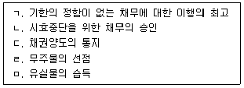
- ㄱ, ㄴ, ㄷ
- ㄷ, ㄹ, ㅁ
- ㄱ, ㄴ, ㄹ, ㅁ
- ㄴ, ㄷ, ㄹ, ㅁ
- ㄱ, ㄴ, ㄷ, ㄹ, ㅁ
(정답률: 알수없음)
15. 상대방 있는 단독행위에 해당하는 것을 모두 고른 것은?
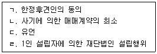
- ㄱ, ㄴ
- ㄱ, ㄹ
- ㄴ, ㄷ
- ㄴ, ㄹ
- ㄷ, ㄹ
(정답률: 알수없음)
16. 반사회질서의 법률행위에 해당하는 것은? (다툼이 있으면 판례에 따름)
- 양도세 회피를 목적으로 한 부동산에 관한 명의신탁약정
- 강제집행을 면할 목적으로 부동산에 허위의 근저당권설정등기를 경료하는 행위
- 전통사찰의 주지직을 거액의 금품을 대가로 양도·양수하기로 하는 약정이 있음을 알고도 이를 묵인한 상태에서 이루어진 종교법인의 양수인에 대한 주지임명행위
- 변호사 아닌 자가 승소 조건의 대가로 소송당사자로부터 소송목적물 일부를 양도받기로 한 약정
- 도박채무의 변제를 위하여 채무자가 그 소유의 부동산 처분에 관하여 도박채권자에게 대리권을 수여한 행위
(정답률: 알수없음)
17. 법률행위의 해석에 관한 설명으로 옳은 것은? (다툼이 있으면 판례에 따름)
- 사실인 관습은 법률행위 당사자의 의사를 보충할 뿐만 아니라 법측으로서의 효력을 갖는다.
- 유언의 경우 우선적으로 규범적 해석이 이루어져야 한다.
- 법률행위의 성립이 인정되는 경우에만 보충적 해석이 가능하다.
- 처분문서가 존재한다면 처분문서의 기재내용과 다른 묵시적 약정이 있는 사실이 인정되더라도 그 기재내용을 달리 인정할 수는 없다.
- 계약당사자 쌍방이 X토지를 계약목적물로 삼았으나, 계약서에는 착오로 Y토지를 기재하였다면, Y토지에 관하여 계약이 성립한 것이다.
(정답률: 알수없음)
18. 의사표시에 관한 설명으로 옳지 않은 것은? (다툼이 있으면 판례에 따름)
- 허위표시에 의한 가장행위라 하더라도 사해행위의 요건을 갖춘 경우, 채권자취소권의 대상이 된다.
- 허위표시의 당사자는 선의의 제3자에게 과실이 있다면 의사표시의 무효를 그 제3자에게 주장할 수 있다.
- 비진의 의사표시의 무효를 주장하는 자가 상대방의 악의 또는 과실에 대한 증명책임을 진다.
- 사기에 의한 의사표시에서 상대방에 대한 고지의무가 없다면 침묵과 같은 부작위는 기망행위가 아니다.
- 동기가 표시되지 않았더라도 상대방에 의하여 유발된 동기의 착오는 취소할 수 있다.
(정답률: 알수없음)
19. 법률행위의 취소에 관한 설명으로 옳지 않은 것은? (다툼이 있으면 판례에 따름)
- 취소할 수 있는 법률행위에 관하여 법정추인 사유가 존재하더라도 이의를 보류했다면 추인의 효과가 발생하지 않는다.
- 취소할 수 있는 법률행위를 취소한 경우, 무효행위의 추인요건을 갖추더라도 다시 추인할 수 없다.
- 계약체결에 관한 대리권을 수여받은 대리인이 취소권을 행사하려면 특별한 사정이 없는 한 취소권의 행사에 관한 본인의 수권행위가 있어야 한다.
- 매도인이 매매계약을 적법하게 해제하였더라도 매수인인 해제로 인한 불이익을 면하기 위해 착오를 이유로 한 취소권을 행사할 수 있다.
- 가분적인 법률행위의 일부에 취소사유가 존재하고 나머지 부분을 유지하려는 당사자의 가정적 의사가 있는 경우, 일부만의 취소도 가능하다.
(정답률: 알수없음)
20. 甲은 乙 소유의 X토지를 매수하기로 乙과 합의하였다. 그 후 甲이 착오를 이유로 그 매매계약을 취소하고자 한다. 이에 관한 설명으로 옳은 것은? (다툼이 있으면 판례에 따름)
- 착오로 인한 의사표시의 취소에 관한 민법 제109조 제1항은 강행규정이므로 그 적용을 배제하는 甲과 乙의 약정은 무효이다.
- X토지의 시가에 대한 착오는 특별한 사정이 없는 한 법률행위의 중요부분에 대한 착오에 해당한다.
- 甲은 자신에게 착오가 있었다는 사실뿐만 아니라 착오가 의사표시에 결정적인 영향을 미쳤다는 점도 증명해야 한다.
- 甲은 자신에게 중과실뿐만 아니라 경과실도 없음을 증명해야 한다.
- 착오로 인한 甲의 불이익이 사후에 사정변경으로 소멸되었더라도 甲은 착오를 이유로 매매계약을 취소할 수 있다.
(정답률: 알수없음)
21. 표현대리와 무권대리에 관한 설명으로 옳지 않은 것은? (다툼이 있으면 판례에 따름)
- 표현대리가 성립된다고 하더라도 무권대리의 성질이 유권대리로 전환되는 것은 아니다.
- 표현대리가 성립하는 경우, 상대방에게 과실이 있다면 과실상계의 법리가 유추적용되어 본인의 책임이 경감될 수 있다.
- 법정대리인의 경우에도 대리권 소멸 후의 표현대리가 성립할 수 있다.
- 사실혼관계에 있는 부부의 경우, 일상가사대리권을 기본대리권으로 하는 권한을 넘은 표현대리가 성립할 수 있다.
- 무권대리행위에 대해 본인이 이의를 제기하지 않고 장기간 방치해 둔 사실만으로 무권대리행위에 대한 추인이 있다고 볼 수 없다.
(정답률: 알수없음)
22. 甲이 乙에게 X토지를 매도 후 등기 전에 丁이 丙의 임의대리인으로 甲의 배임행위에 적극 가담하여 甲으로부터 X토지를 매수하고 丙 명의로 소유권이전등기를 마쳤다. 이에 관한 설명으로 옳지 않은 것은? (다툼이 있으면 판례에 따름)
- 수권행위의 하자유무는 丙을 기준으로 판단한다.
- 대리행위의 하자유무는 특별한 사정이 없는 한 丁을 기준으로 판단한다.
- 대리행위의 하자로 인하여 발생한 효과는 특별한 사정이 없는 한 丙에게 귀속된다.
- 乙은 반사회질서의 법률행위임을 이유로 甲과 丙 사이의 계약이 무효임을 주장할 수 있다.
- 丁이 甲의 배임행위에 적극 가담한 사정을 丙이 모른다면, 丙 명의로 경료된 소유권이전등기는 유효하다.
(정답률: 알수없음)
23. 조건과 기한에 관한 설명으로 옳지 않은 것은? (다툼이 있으면 판례에 따름)
- 법률행위에 정지조건이 붙어 있다는 사실은 그 법률행위의 효력발생을 다투려는 자가 증명하여야 한다.
- 조건의사가 외부로 표시되지 않은 경우, 조건부 법률행위로 인정되지 않는다.
- 당사자가 조건성취의 효력을 그 성취전에 소급하게 할 의사를 표시한 경우, 그 위사 표시는 무효이다.
- 불확정한 사실이 발생한 때를 이행기한으로 정한 경우, 그 사실의 발생이 불가능하게 된 때에도 기한이 도래한 것으로 본다.
- 상계의 의사표시에는 기한을 붙일 수 없다.
(정답률: 알수없음)
24. 소멸시효에 관한 설명으로 옳지 않은 것은? (다툼이 있으면 판례에 따름)
- 불계속지역권은 소멸시효에 걸리는 권리이다.
- 공유관계가 존속하는 한 공유물분할청구권은 독립하여 소멸시효에 걸리지 않는다.
- 건물이 완공되기 전에는 건물에 관한 소유권이전등기청구권의 시효가 진행하지 않는다.
- 소멸시효 완성 후에 채무승인이 있었다면, 곧바로 소멸시효 이익의 포기가 있는 것으로 간주된다.
- 정지조건부 채권의 소멸시효는 그 조건이 성취한 때로부터 진행한다.
(정답률: 알수없음)
25. 소멸시효의 중단과 정지에 관한 설명으로 옳지 않은 것은? (다툼이 있으면 판례에 따름)
- 시효의 중단은 원칙적으로 당사자 및 그 승계인간에만 효력이 있다.
- 가압류에 의한 시효중단의 효력은 가압류의 집행보전의 효력이 존속하는 동안 계속된다.
- 물상보증인 소유의 부동산에 대한 압류는 그 통지와 관계없이 주채무자에 대하여 시효중단의 효력이 생긴다.
- 재산을 관리하는 후견인에 대한 제한능력자의 권리는 그가 능력자가 되거나 후임 법정대리인이 취임한 때부터 6개월 내에는 소멸시효가 완성되지 않는다.
- 부부 중 한쪽이 다른 쪽에 대하여 가지는 권리는 혼인관계가 종료된 때부터 6개월 내에는 소멸시효가 완성되지 않는다.
(정답률: 알수없음)
26. 부동산점유취득시효에 관한 설명으로 옳지 않은 것은? (다툼이 있으면 판례에 따름)
- 취득시효 완성 당시에는 일반재산이었으나 취득시효 완성 후에 행정재산으로 변경된 경우, 국가를 상대로 소유권이전등기청구를 할 수 없다.
- 점유자가 매매와 같은 자주점유의 권원을 주장하였다가 그 점유권원이 인정되지 않았다는 것만으로는 자주점유의 추정은 번복되지 않는다.
- 취득시효기간 중 계속해서 등기명의자가 동일한 경우, 점유개시 후 임의의 시점을 시효기간의 기산점으로 삼을 수 있다.
- 취득시효의 완성을 알고 있는 소유자가 부동산을 선의의 제3자에게 처분하여 소유권이전등기를 마친 경우, 그 소유자는 시효완성자에게 불법행위로 인한 손해배상책임을 진다.
- 취득시효 완성 후 그로 인한 등기 전에 소유자가 저당권을 설정한 경우, 특별한 사정이 없는 한 시효완성자는 등기를 함으로써 저당권의 부담이 없는 소유권을 취득한다.
(정답률: 알수없음)
27. 지상권에 관한 설명으로 옳지 않은 것은? (다툼이 있으면 판례에 따름)
- 지료연체를 이유로 한 지상권 소멸청구에 의해 지상권이 소멸한 경우, 지상권자는 지상물에 대한 매수청구권을 행사할 수 없다.
- 나대지(裸垈地)에 저당권을 설정하면서 그 대지의 담보가치를 유지하기 위해 무상의 지상권을 설정하고 채무자로 하여금 그 대지를 사용하도록 한 경우, 제3자가 그 대지를 무단으로 점유·사용한 것으로는 특별한 사정이 없는 한 지상권자는 그 제3자에게 지상권침해를 이유로 손해배상을 청구할 수 없다.
- 지상권자는 지상권을 유보한 채 지상물 소유권만을 양도할 수 있고, 지상물 소유권을 유보한 채 지상권만을 양도할 수도 있다.
- 담보가등기가 마쳐진 나대지(裸垈地)에 그 소유자가 건물을 신축한 후 그 가등기에 기한 본등기가 경료되어 대지와 건물의 소유자가 달라진 경우, 특별한 사정이 없는 한 관습상 법정지상권이 성립된다.
- 법정지상권을 취득한 건물소유자가 법정지상권의 설정등기를 경료함이 없어 건물을 양도하는 경우, 특별한 사정이 없는 한 토지소유자는 건물의 양수인을 상대로 건물의 철거를 청구할 수 없다.
(정답률: 알수없음)
28. 물권에 관한 설명으로 옳지 않은 것은? (다툼이 있으면 판례에 따름)
- 물권법정주의에 관한 민법 제185조의 “법률”에는 규칙이나 지방자치단체의 조례가 포함되지 않는다.
- 온천에 관한 권리는 독립한 물권으로 볼 수 없다.
- 일물일권주의 원칙상 특정 양만장 내의 뱀장어들 전부에 대해서는 1개의 양도담보권을 설정할 수 없다.
- 사용·수익권능이 영구적·대세적으로 포기된 소유권은 특별한 사정이 없는 한 허용될 수 없다.
- 소유권에 기한 물권적 청구권은 소멸시효의 대상이 아니다.
(정답률: 알수없음)
29. 저당권에 관한 설명으로 옳지 않은 것은? (다툼이 있으면 판례에 따름)
- 저당권설정 후 저당부동산에 부합된 물건에 대해서도 특별한 사정이 없는 한 저당권의 효력은 미친다.
- 저당목적물이 제3자에게 양도된 후 저당권자가 저당목적물을 압류만 하더라도 그 목적물의 과실에 관하여 그 제3취득자에게 대항할 수 있다.
- 저당권이 설정된 후 그 부동산의 소유권이 제3자에게 이전된 경우, 종전 소유자도 피담보채권의 소멸을 이유로 저당권설정등기의 말소를 청구할 수 있다.
- 저당권설정자로부터 저당토지에 대해 용익권을 설정받은 자가 그 지상에 건물을 신축한 후 저당권설정자에게 그 건물의 소유권을 이전한 경우, 저당권자는 토지와 건물에 대해 일괄경매를 청구할 수 있다.
- 후순위 저당권자가 저당부동상네 대해 경맹을 신청한 경우, 선순위 근저당권의 피담보 채무 확정시기는 매수인이 매각대금을 완납한 때이다.
(정답률: 알수없음)
30. 전세권에 대한 설명으로 옳은 것을 모두 고른 것은? (다툼이 있으면 판례에 따름)
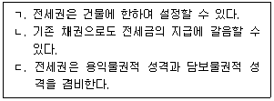
- ㄱ
- ㄷ
- ㄱ, ㄴ
- ㄴ, ㄷ
- ㄱ, ㄴ, ㄷ
(정답률: 알수없음)
31. 질권에 관한 설명으로 옳지 않은 것은? (다툼이 있으면 판례에 따름)
- 타인의 채무를 담보하기 위하여 질권을 설정한 자는 채무자에 대한 사전구상권을 갖는다.
- 선의취득에 관한 민법 제249조는 동산질권에 준용한다.
- 양도할 수 없는 채권은 질권의 목적이 될 수 없다.
- 임대차보증금채권에 질권을 설정할 경우, 임대차계약서를 교부하지 않더라도 채권질권은 성립한다.
- 채권질권의 설정자가 그 목적인 채권을 양도하는 경우, 질권자의 동의는 필요하지 않다.
(정답률: 알수없음)
32. 유치권에 관한 설명으로 옳지 않은 것은?
- 유치권에는 물상대위성이 인정되지 않는다.
- 분할이 가능한 토지의 일부에도 유치권이 성립할 수 있다.
- 피담보채권이 양도와 목적물의 인도가 있으면 유치권은 이전된다.
- 유치권자는 채권의 변제를 받기 위해 유치물을 경매할 수 있다.
- 유치부동산에 대하여 법원이 간이변제충당을 허가한 경우, 그 부동산에 대한 등기를 하여야 소유권이 이전된다.
(정답률: 알수없음)
33. 민법이 규정하고 있는 전형계약이 아닌 것은?
- 부당이득
- 위임
- 도급
- 증여
- 매매
(정답률: 알수없음)
34. 계약이 성립에 관한 설명으로 옳지 않은 것은?
- 승낙기간이 정해진 경우에 승낙의 통지가 그 기간 내에 도달하지 않으면 특별한 사정이 없는 한 계약은 성립하지 않는다.
- 격지자간의 계약은 승낙의 통지가 도달한 때에 성립한다.
- 청약이 상대방에게 도달하여 그 효력이 발생하면 청약자는 임의로 이를 철회하지 못한다.
- 청약자의 의사표시에 의하여 승낙의 통지가 필요 없는 경우, 계약은 승낙의 의사표시로 인정되는 사실에 있는 때에 성립한다.
- 당사자 간에 동일한 내용의 청약이 상호 교차된 경우에는 양청약이 상대방에게 도달한 때에 계약이 성립한다.
(정답률: 알수없음)
35. 甲이 乙에게 X토지 1천 m2를 10억원에 매도하였는데, 그 중 200m2가 丙 소유에 속하였고 이를 乙에게 이전할 수 없게 되었으며 乙은 이러한 사실을 모르고 있었다. 이에 관한 설명으로 옳은 것을 모두 고른 것은? (다툼이 있으면 판례에 따름)
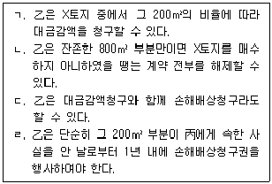
- ㄱ, ㄴ
- ㄴ, ㄷ
- ㄷ, ㄹ
- ㄱ, ㄴ, ㄷ
- ㄴ, ㄷ, ㄹ
(정답률: 알수없음)
36. 도급에 관한 설명으로 옳지 않은 것은? (다툼이 있으면 판례에 따름)
- 특별한 사정이 없는 한 수급인은 제3자를 사용하여 일을 완성할 수 있다.
- 완성된 주택을 도급인이 원시취득한 경우, 수급인은 보수를 지급받을 때까지 그 주택에 대하여 유치권을 행사할 수 있다.
- 도급인의 파산선고로 수급인이 계약을 해제한 경우, 수급인은 도급인에 대하여 계약해제로 인한 손해배상을 청구할 수 있다.
- 수급인이 일을 완성하기 전에는 도급인은 수급인이 입게 될 손해를 배상하고 계약을 해제할 수 있다.
- 완성된 주택의 하자로 인하여 계약의 목적을 달성할 수 없더라도 도급인은 계약을 해제할 수 없다.
(정답률: 알수없음)
37. 甲이 자신의 과실 없음을 스스로 증명하여 불법행위책임을 면할 수 있는 경우를 모두 고른 것은? (다툼이 있으면 판례에 따름)
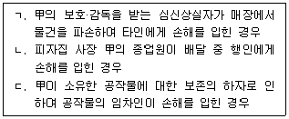
- ㄱ
- ㄷ
- ㄱ, ㄴ
- ㄴ, ㄷ
- ㄱ, ㄴ, ㄷ
(정답률: 알수없음)
38. 甲은 그 소유의 X주택을 乙에게 매도하기로 약정하였는데, 인도와 소유권이전등기를 마치기 전에 X주택에 소실되었다. 이에 관한 설명으로 옳지 않은 것은? (다툼이 있으면 판례에 따름)
- X주택이 불가항력으로 소실된 경우, 甲은 乙에게 대금지급을 청구할 수 없다.
- X주택이 甲의 과실로 소실된 경우, 乙은 甲에게 이행불능에 따른 손해배상을 청구할 수 있다.
- X주택이 乙의 과실로 소실된 경우, 甲은 乙에게 대금지급을 청구할 수 있다.
- 乙의 수령지체 중에 X주택이 甲과 乙에게 책임 없는 사유로 소실된 경우, 甲은 乙에게 대금지급을 청구할 수 없다.
- 乙이 이미 대금을 지급하였는데 X주택이 불가항력으로 소실된 경우, 乙은 甲에게 부당이득을 이유로 대금의 반환을 청구할 수 있다.
(정답률: 알수없음)
39. 변제에 관한 설명으로 옳지 않은 것은? (다툼이 있으면 판례에 따름)
- 법률상 이해관계 없는 제3자는 채무자의 의사에 반하여 변제할 수 없다.
- 지명채권증서의 반환과 변제는 동시이행관계에 있다.
- 채권의 준점유자에 대한 변제는 변제자가 선의의며 과실 없는 때에 한하여 효력이 있다.
- 채무자가 채무의 변제로 인도한 타인의 물건을 채권자가 선의로 소비한 경우에 채권은 소멸한다.
- 영수증 소지자가 변제를 받을 권한이 없음을 변제자가 알면서도 변제한 경우에는 변제로서의 효력이 없다.
(정답률: 알수없음)
40. 채무불이행에 따른 손해배상에 관한 설명으로 옳은 것은? (다툼이 있으면 판례에 따름)
- 채무불이행을 이유로 계약을 해제하면 별도로 손해배상을 청구하지 못한다.
- 채무불이행에 관해 채권자에게 과실이 있는 경우, 법원은 채무자의 주장에 의해 손해배상의 책임 및 그 금액을 정함에 이를 참작할 수 있다.
- 채권자가 그 채권의 목적인 물건의 가액일부를 손해배상으로 받은 경우, 채무자는 그 물건의 소유권을 취득한다.
- 지연손해배상액을 예정한 경우, 채권자는 예정배상액의 청구와 함께 본래의 급부이행을 청구할 수 있다.
- 금전채무불이행의 경우, 채무자는 과실없음을 항변할 수 있다.
(정답률: 알수없음)
2과목: 회계원리
41. 다음 각 설명에 해당하는 감사의견은?
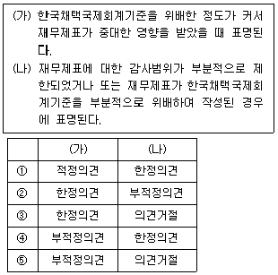
- ①
- ②
- ③
- ④
- ⑤
(정답률: 알수없음)
42. 재무제표 요소의 정의에 관한 설명으로 옳은 것은?
- 자산은 현재사건의 결과로 기업이 통제하는 미래의 경제적자원이다.
- 부채는 과거사건의 결과로 기업이 경제적자원을 이전해야 하는 과거의무이다.
- 자본은 기업의 자산에서 모든 부채를 차감한 후의 잔여지분이다.
- 수익은 자산의 감소 또는 부채의 증가로서 자본의 증가를 가져온다.
- 비용은 자산의 증가 또는 부채의 감소로서 자본의 감소를 가져온다.
(정답률: 알수없음)
43. (주)한국은 20×1년 8월 1일 화재보험에 가입하고, 향후 1년간 보험료 \12,000을 전액 현금지급하면서 선급보험료를 회계처리 하였다. 동 거래와 관련하여 (주)한국이 20×1년 말에 수정분개를 하지 않았을 경우, 20×1년 말 재무상태표에 미치는 영향은? (단, 보험료는 월할계산한다.)
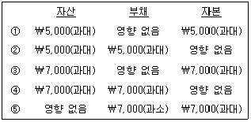
- ①
- ②
- ③
- ④
- ⑤
(정답률: 알수없음)
44. 수정후시산표의 각 계정잔액이 존재한다고 가정할 경우, 장부마감 후 다음 회계연도 차변으로 이월되는 계정과목은?
- 이자수익
- 자본금
- 매출원가
- 매입채무
- 투자부동산
(정답률: 알수없음)
45. 보강적 질적특성 중 비교가능성은 측정기준의 선택에 영향을 미친다. 다음 중 기업 간 비교가능성을 높이거나 향상시킬 수 있는 측정기준을 모두 고른 것은?
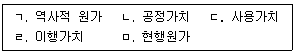
- ㄱ, ㄴ
- ㄴ, ㄷ
- ㄴ, ㅁ
- ㄷ, ㄹ
- ㄷ, ㄹ, ㅁ
(정답률: 알수없음)
46. 재무제표 표시에 관한 설명으로 옳지 않은 것은?
- 전체 재무제표(비교정보를 포함)는 적어도 1년마다 작성한다.
- 재무제표는 기업의 재무상태, 재무성과 및 현금흐름을 공정하게 표시해야 한다.
- 당기손익과 기타포괄손익은 단일의 포괄손익계산서에서 두 부분으로 나누어 표시할 수 없다.
- 한국채택국제회계기준에서 요구하거나 허용하지 않는 한 자산과 부채 그리고 수익과 비용은 상계하지 아니한다.
- 한국채택국제회계기준을 준수하여 작성된 재무제표는 국제회계기준을 준수하여 작성된 재무제표임을 주석으로 공시할 수 있다.
(정답률: 알수없음)
47. (주)한국의 20×1년도 현금흐름표 자료가 다음과 같을 때, 투자활동 현금흐름은?
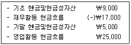
- (-)\12,000
- (-)\8,000
- (-)\4,000
- \4,000
- \8,000
(정답률: 알수없음)
48. 다음 자료를 이용하여 계산한 기초자산은?
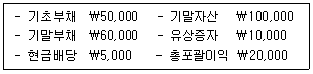
- \55,000
- \65,000
- \70,000
- \75,000
- \85,000
(정답률: 알수없음)
49. 포괄손익계산서에 나타나는 항목이 아닌 것은?
- 미수수익
- 매출액
- 유형자산처분이익
- 이자비용
- 법인세비용
(정답률: 알수없음)
50. 수익 또는 비용에 영향을 주지 않는 것은?
- 용역제공계약을 체결하고 현금을 수취하였으나 회사는 기말 현재 거래 상대방에게 아직까지 용역을 제공하지 않았다.
- 외상으로 제품을 판매하였다.
- 홍수로 인해 재고자산이 침수되어 멸실되었다.
- 거래처 직원을 접대하고 현금을 지출하였다.
- 회사가 사용 중인 건물의 감가상각비를 인식하였으나 현금이 유출되지는 않았다.
(정답률: 알수없음)
51. 다음 중 충당부채를 인식하기 위해 충족해야 하는 요건을 모두 고른 것은?
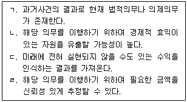
- ㄱ, ㄴ
- ㄱ, ㄷ
- ㄴ, ㄹ
- ㄱ, ㄴ, ㄹ
- ㄴ, ㄷ, ㄹ
(정답률: 알수없음)
52. 현금흐름표 상 영업활동 현금흐름에 속하지 않는 것은?
- 신주발행으로 유입된 현금
- 재고자산 구입으로 유출된 현금
- 매입채무 지급으로 유출된 현금
- 종업원 급여 지급으로 유출된 현금
- 고객에게 용역제공을 수행하고 유입된 현금
(정답률: 알수없음)
53. 실지재고조사법을 적용하는 (주)한국은 20×1년 기말재고자산(상품) \10,000(원가)을 누락하여 과소계상 하였다. 해당 오류가 향후 밝혀지지 않을 경우, 다음 설명 중 옳은 것은?
- 20×1년 매출원가는 \10,000 과대계상 된다.
- 20×1년 영업이익은 \10,000 과대계상 된다.
- 20×2년 기초재고자산은 \10,000 과대계상 된다.
- 20×2년 매출원가는 \10,000 과대계상 된다.
- 누락된 기말재고자산이 20×2년 중 판매되었다면, 20×3년 매출총익이은 \10,000 과대계상 된다.
(정답률: 알수없음)
54. 주당이익 계산 시 유통보통주식수를 증가시키는 사건이 아닌 것은? (단, 각 사건은 독립적이며, 보통주와 관련하여 기중에 발생한 것으로 가정한다.)
- 신주인수권 행사
- 유상증자
- 자기주식 재발행
- 주식배당
- 주식병합
(정답률: 알수없음)
55. 다음 자료를 이용하여 계산한 기말재고자산은? (단, 재고자산평가손실과 재고자산 감모손실은 없다.)
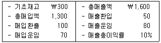
- \35
- \103
- \130
- \175
- \247
(정답률: 알수없음)
56. 기타포괄이익을 증가 또는 감소시키는 거래는?
- 매출채권에 대한 손상인식
- 신용으로 용역(서비스) 제공
- 판매직원에 대한 급여 미지급
- 영업용 차량에 대한 감가상각비 인식
- 유형자산에 대한 최초 재평가에서 평가이익 인식
(정답률: 알수없음)
57. 실지재고조사법을 적용하고 있는 (주)한국의 20×1년 재고자산 관련 자료가 다음과 같을 때, 가중평균법에 의한 기말재고자산은? (단, 재고자산평가손실은 없다.)
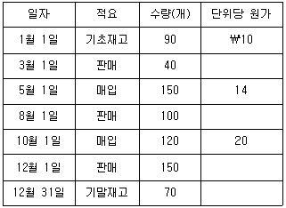
- \1,027
- \1,043
- \1,⑤0
- \1,177
- \1,400
(정답률: 알수없음)
58. 외상판매만을 수행하는 (주)한국은 20×1년 12월 31일 화재로 인해 창고에 있던 상품을 전부 소실하였다. (주)한국의 매출채권회전률은 500%이고, 매출총이익률은 30%로 매년 동일하였다. 20×1년 (주)한국의 평균매출채권은 \600,000이고 판매가능상품(기초재고와 당기순매입액의 합계)이 \2,650,000인 경우, 20×1년 12월 31일 화재로 소실된 상품 추정액은?
- \350,000
- \400,000
- \450,000
- \500,000
- \550,000
(정답률: 알수없음)
59. 단일상품만을 매매하는 (주)한국의 기초재고자산은 \2,000이고, 당기순매입액은 \10,000이다. 기말재고자산 관련 자료가 다음과 같을 때, 매출원가는? (단, 감모손실 중 60%는 비정상감모손실(기타비용)로 처리하며, 정상감모손실과 평가손실은 매출원가에 포함한다.)
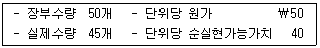
- \9,750
- \9,950
- \10,⑤0
- \10,100
- \10,200
(정답률: 알수없음)
60. 다음 중 재고자산에 해당하는 것을 모두 고른 것은?
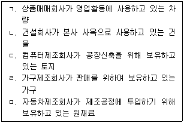
- ㄱ, ㄴ
- ㄱ, ㄹ
- ㄴ, ㄷ
- ㄷ, ㅁ
- ㄹ, ㅁ
(정답률: 알수없음)
61. (주)한국은 20×1년 초 토지(유형자산)를 \1,000에 취득하여 재평가모형을 적용하였다. 해당 토지의 공정가치가 다음과 같을 때, 토지와 관련하여 (주)한국이 20×2년 당기손익으로 인식할 금액은?
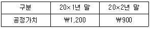
- 손실 \300
- 손실 \200
- 손실 \100
- 이익 \100
- 이익 \200
(정답률: 알수없음)
62. (주)한국은 20×1년 4월 초 기계장치(잔존가치 \0, 내요연수 5년, 연수합계법 상각)를 \12,000에 구입함과 동시에 사용하였다. (주)한국은 20×3년 초 동 기계장치에 대하여 \1,000을 지출하였는데, 이 중 \600은 현재의 성능을 유지하는 수선유지비에 해당하고, \400은 생산능력을 증가시키는 지출로 자산의 인식조건을 충족한다. 동 지출에 대한 회계처리 반영 후, 20×3년 초 기계장치 장부금액은? (단, 원가모형을 적용하며, 감가상각은 월할계산한다.)
- \5,600
- \6,000
- \6,200
- \6,600
- \7,000
(정답률: 알수없음)
63. (주)한국은 20×1년 초 취득하여 사용하던 기계장치(내용연수 6년, 잔존가치 \0, 정액법 상각)를 20×3년 초 처분하면서 현금 \5,500을 수취하고 유형자산처분손실 \500을 인식하였다. 기계장치의 취득원가는? (단, 원가모형을 적용하며, 손상은 발생하지 않았다.)
- \5,000
- \6,000
- \7,500
- \9,000
- \10,000
(정답률: 알수없음)
64. 기계장치 취득 관련 자료가 다음과 같을 때, 기계장치의 취득원가는?
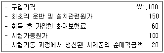
- \1,100
- \1,250
- \1,330
- \1,350
- \1,370
(정답률: 알수없음)
65. 연구개발활동 중 개발활동에 해당하는 것은?
- 새로운 지식을 얻고자 하는 활동
- 생산이나 사용 전의 시제품과 모형을 설계, 제작, 시험하는 활동
- 연구결과나 기타 지식을 탐색, 평가, 최종 선택, 응용하는 활동
- 재료, 장치, 제품, 공정, 시스템이나 용역에 대한 여러 가지 대체안을 탐색하는 활동
- 새롭거나 개선된 재료, 장치, 제품, 시스템이나 용역에 대한 여러 가지 대체안을 제안, 설계, 평가, 최종 선택하는 활동
(정답률: 알수없음)
66. (주)한국은 20×1년 4월 1일 (주)대한의 보통주 100주를 1주당 \10,000에 취득하고 취득수수료 \20,000을 현금으로 지급하였다. (주)한국은 취득한 보통주를 당기손익-공정가치 측정 금융자산으로 분류하였으며, 20×1년 8월 1일 1주당 \1,000의 중간배당금을 현금으로 수령하였다. 20×1년 말 (주)대한의 보통주 공정가치는 1주당 \10,500이었다. 동 주식과 관련하여 (주)한국이 20×1년 인식할 금융자산 평가손익은?
- 손실 \70,000
- 손실 \50,000
- 손실 \30,000
- 이익 \30,000
- 이익 \50,000
(정답률: 알수없음)
67. (주)한국은 20×1년 1월 1일 액면금액 \1,000,000인 사채(만기 3년, 표시이자율 연 10%, 이자는 매년 말 후급)를 \1,106,900에 발행하고, 상각후원가로 측정하였다. 발행당시 유효이자율은 연 6%이었다. 20×2년 1월 1일 동 사채 전부를 조기상환하였고, 이로 인해 사채상환이익이 \4,500 발생하였다. (주)한국이 동 사채를 상환하기 위해 지급한 금액은?
- \1,068,814
- \1,077,814
- \1,102,400
- \1,135,986
- \1,144,986
(정답률: 알수없음)
68. (주)한국은 20×1년 4월 1일 다음과 같은 받을어음을 은행에서 할인하고, 할인료를 제외한 금액을 현금으로 수취하였다. 동 어음할인으로 매출채권처분손실이 \159 발생한 경우, (주)한국이 수취한 현금은? (단, 금융자산의 양도는 제거조건을 충족하며, 이자는 월할계산한다.)
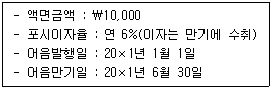
- \9,841
- \9,991
- \10,141
- \10,159
- \10,459
(정답률: 알수없음)
69. (주)한국이 20×1년 말 보유하고 있는 자산이 다음과 같을 때, 20×1년 말 재무상태표에 표시될 현금및현금성자산은?
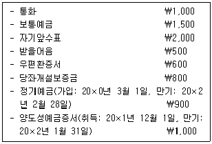
- \4,500
- \5,100
- \5,900
- \6,100
- \7,000
(정답률: 알수없음)
70. (주)한국의 20×1년 중 발생한 거래 및 20×1년 말 손상차손 추정과 관련된 자료는 다음과 같다. (주)한국의 20×1년도 포괄손익계산서상 매출채권에 대한 손상차손이 \35,000일 때, 20×1년 초 매출채권에 대한 손실충당금은?
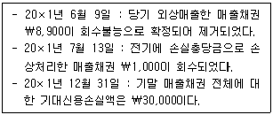
- \1,000
- \1,900
- \2,900
- \3,900
- \5,000
(정답률: 알수없음)
71. 금융부채에 해당하지 않는 것은?
- 선수임대료
- 미지급금
- 매입채무
- 사채
- 단기차입금
(정답률: 알수없음)
72. 20×1년 말 현재 (주)한국의 장부상 당좌예금 잔액은 \84,500으로 은행측 잔액증명서상 잔액과 차이가 있다. 차이가 나는 원인이 다음과 같을 때, 차이를 조정한 후의 올바른 당좌예금 잔액은?
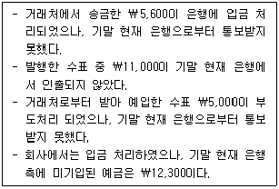
- \72,900
- \79,100
- \83,900
- \85,100
- \86,400
(정답률: 알수없음)
73. (주)한국의 20×1년도 매출액은 \115,000이며 매출총이익률은 40%이다. 같은 기간 직접재료 매입액은 \22,000이고 제조간접원가 발생액은 직접노무원가의 50%이다. 20×1년 기초 및 기말 재고자산이 다음과 같을 때, 20×1년에 발생한 제조간접원가는?
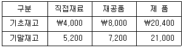
- \10,400
- \16,000
- \20,800
- \26,400
- \32,000
(정답률: 알수없음)
74. 타일시공 전문업체인 (주)한국은 새로운 프리미엄 타일시공법을 개발하고, 이에 대한 홍보를 위해 10m2 면적의 호텔객실 1개에 대하여 무료로 프리미엄 타일시공을 수행하면서 총 20시간의 직접노무시간을 투입하였다. (주)한국은 프리미엄 타일시공의 경우 직접노무시간이 90%의 학습율을 가지는 학습효과가 존재하고, 누적평균시간 학습곡선모형을 따를 것으로 추정하고 있다. (주)한국은 동 호텔로부터 동일한 구조와 형태 및 면적(10m2)의 7개 객실(총 70m2)에 대한 프리미엄 타일시공 의뢰를 받았다. 이와 관련하여 투입될 것으로 추정되는 직접노무시간은? (단, 시공은 10m2 단위로 수행된다.)
- 90시간
- 96.64시간
- 116.64시간
- 126시간
- 140시간
(정답률: 알수없음)
75. (주)한국은 정상개별원가계산제도를 채택하고 있다. 제조간접웍나는 직접노무원가를 기준으로 예정배부하고 있으며, 제조간접원가 배부차이는 전액 매출원가에서 조정하고 있다. 당기 원가자료가 다음과 같을 때, 당기제품제조원가는? (단, 제조간접원가 예정배부율은 매 기간 동일하다.)
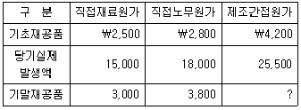
- \55,500
- \56,000
- \56,500
- \57,000
- \57,500
(정답률: 알수없음)
76. (주)한국은 20×1년 초에 영업을 개시하고 5,000단위의 제품을 생산하여 단위당 \1,500원에 판매하였으며, 영업활동에 관한 자료는 다음과 같다.
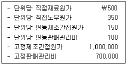
변동원가계산에 의한 영업이익이 전부원가계산에 의한 영업이익에 비하여 \300,000이 적을 경우, (주)한국의 20×1년 판매수량은? (단, 기말재공품은 존재하지 않는다.)
- 1,500단위
- 2,000단위
- 2,500단위
- 3,000단위
- 3,500단위
(정답률: 알수없음)
77. (주)한국은 표준원가계산제도를 채택하고 있다. 직접노무원가 관련 자료가 다음과 같을 때, 직접노무원가 시간당 표준임률은?
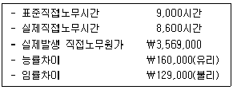
- \380
- \385
- \397
- \400
- \415
(정답률: 알수없음)
78. (주)한국은 당기 손익분기점 매출액을 \250,000으로 예상하고 있으며, 고정비는 \100,000이 발생할 것으로 추정하고 있다. (주)한국이 당기에 매출액의 15%에 해당하는 영업이익을 획들할 경우, 안전한계율은?
- 22.5%
- 27.5%
- 32.5%
- 37.5%
- 42.5%
(정답률: 알수없음)
79. (주)한국은 가중평균법에 의한 종합원가계산제도를 채택하고 있으며, 모든 원가는 공정전반에 걸쳐 균등하게 발생한다. (주)한국의 당기 제조활동에 관한 자료는 다음과 같다.
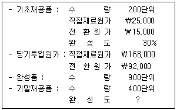
(주)한국의 당기 완성품 단위당원가가 \250일 경우, 기말재공품의 완성도는? (단, 공정전반에 대해 공손과 감손은 발생하지 않는다.)
- 55%
- 60%
- 65%
- 70%
- 75%
(정답률: 알수없음)
80. (주)한국은 연간 최대 5,000단위의 제품을 생산할 수 있는 생산설비를 보유하고 있다. (주)한국은 당기에 4,000단위의 제품을 기존 거래처에 단위당 \500에 판매할 수 있을 것으로 예상하고 있으며, 영업활동에 관한 자료는 다음과 같다.
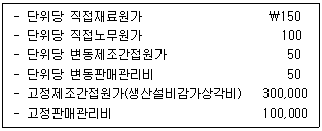
(주)한국은 최근 중간도매상으로부터 2,500단위에 대한 특별주문을 요청받았다. (주)한국이 해당 특별주문을 수락하는 경우 기존 거래처에 판매하던 수량 일부를 감소시켜야 한다. (주)한국이 이 특별주문을 수락할 경우, 중간도매상에 제안할 수 있는 단위당 최소 판매가격은? (단, 기초 및 기말 재고자산은 없으며, 특별주문은 전량 수락하든지 기각해야 한다.)
- \410
- \440
- \450
- \500
- \510
(정답률: 알수없음)
3과목: 공동주택시설개론
81. 지반내력(허용지내력)의 크기가 큰 것부터 옳게 나열한 것은?
- 화성암 – 수성암 – 자갈과 모래의 혼합물 – 자갈 – 모래 – 모래 섞인 점토
- 화성암 – 수성암 – 자갈 – 자갈과 모래의 혼합물 – 모래 섞인 점토 – 모래
- 화성암 – 수성암 – 자갈과 모래의 혼합물 – 자갈 – 모래 섞인 점토 – 모래
- 수성암 – 화성암 – 자갈 – 자갈과 모래의 혼합물 – 모래 – 모래 섞인 점토
- 수성암 – 화성암 – 자갈과 모래의 혼합물 – 자갈 – 모래 섞인 점토 – 모래
(정답률: 알수없음)
82. 강관 비계의 설치공사에 관한 설명으로 옳지 않은 것은?(문제 오류로 가답안 발표시 5번으로 발표되었지만 확정답안 발표시 2, 5번이 정답처리 되었습니다. 여기서는 가답안인 5번을 누르시면 정답 처리 됩니다.)
- 비계기둥의 간격은 장선방향으로 1.5m 이하로 설치한다.
- 비계기둥의 간격은 띠장방향으로 1.5m 이상, 1.8m 이하로 설치한다.
- 벽 이음재의 배치간격은 수직방향 5.0m 이하, 수평방향 5.0m 이하로 설치한다.
- 대각으로 설치하는 가새는 수평면에 대해 40° ~ 60° 방향으로 설치한다.
- 지상으로부터 첫 번째 띠장은 통행을 위해 강관의 좌굴이 발생하지 않는 한도 내에서 2.0m 이상으로 설치한다.
(정답률: 알수없음)
83. 미장공사에서 콘크리트, 콘크리트블록 바탕에 초벌 바름하기 전 마감두께를 균등하게 할 목적으로 모르타르 등으로 미리 요철을 조정하는 것은?
- 고름질
- 라스 먹임
- 규준 바름
- 손질 바름
- 실러 바름
(정답률: 알수없음)
84. 조적공사에서 백화현상을 방지하기 위한 대책으로 옳지 않은 것은?
- 조립률이 큰 모래를 사용
- 분말도가 작은 시멘트를 사용
- 물시멘트(W/C)비를 감소시킴
- 벽면에 차양, 돌림띠 등을 설치
- 흡수율이 작고 소성이 잘된 벽돌을 사용
(정답률: 알수없음)
85. 타일의 줄눈너비로 옳지 않은 것은? (단, 도면 또는 공사시방서에 타일 줄눈너비에 대하여 정한 바가 없을 경우)
- 개구부 둘레와 설비 기구류와의 마무리 줄눈 : 10mm
- 대형벽돌형(외부) : 10mm
- 대형(내부일반) : 6mm
- 소형 : 3mm
- 모자이크 : 2mm
(정답률: 알수없음)
86. 재료의 일반적인 추정 단위 중량(kg/m3)으로 옳지 않은 것은?
- 철근콘크리트 : 2,400
- 보통 콘크리트 : 2,200
- 시멘트 모르타르 : 2,100
- 시멘트(자연상태) : 1,500
- 물 : 1,000
(정답률: 알수없음)
87. 건축물에 작용하는 하중에 관한 설명으로 옳은 것은?
- 고정하중과 활하중은 단기하중이다.
- 엘리베이터의 자중은 활하중에 포함된다.
- 기본지상적설하중은 재현기간 100년에 대한 수직 최심적설깊이를 기준으로 한다.
- 풍하중은 건축물 형태에 영향을 받지 않는다.
- 반응수정계수가 클수록 산정된 지진하중의 크기도 커진다.
(정답률: 알수없음)
88. 건물 구조형식에 관한 설명으로 옳은 것은?
- 이중골조 구조 : 수평력의 25% 미만을 부담하는 가새골조가 전단벽이나 연성모멘트 골조와 조합되어 있는 구조
- 전단벽 구조 : 전단벽이 캔틸레버 형태로 나와 외고가부의 기둥을 스트럿(strut)이나 타이(tie)처럼 거동하게 함으로써 응력 및 하중을 재분배시키는 구조
- 골조-전단벽 구조 : 수평력을 전단벽과 골조가 각각 독립적으로 저항하는 구조
- 절판 구조 : 판을 주름지게 하여 휨에 대한 저항능력을 향상시키는 구조
- 플랫 슬래브 구조 : 슬래브의 상부하중을 보와 슬래브로 지지하는 구조
(정답률: 알수없음)
89. 아스팔트 방수공법에 관한 설명으로 옳지 않은 것은?
- 아스팔트 용융공정이 필요하다.
- 멤브레인 방수의 일종이다.
- 작업 공정이 복잡하다.
- 결함부 발견이 용이하다.
- 보호누름층이 필요하다.
(정답률: 알수없음)
90. 지하실 바깥방수공법과 비교하여 안방수공법에 관한 설명으로 옳지 않은 것은?
- 수압이 크고 깊은 지하실에 적합하다.
- 공사시기가 자유롭다.
- 공사비가 저렴하다.
- 시공성이 용이하다.
- 보호누름이 필요하다.
(정답률: 알수없음)
91. 도장공사의 하자가 아닌 것은?
- 은폐불량
- 백화
- 기포
- 핀홀
- 피트
(정답률: 알수없음)
92. 지붕의 경사(물매)에 관한 설명으로 옳지 않은 것은?
- 되물매는 경사 1 : 2 물매이다.
- 평물매는 경사 45° 미만의 물매이다.
- 반물매는 평물매의 1/2 물매이다.
- 급경사 지붕은 경사가 3/4 이상의 지붕이다.
- 평지붕은 경사가 1/6 이하의 지붕이다.
(정답률: 알수없음)
93. 시멘트 블록(290×190×150mm)을 이용하여 길이 100m, 높이 3m의 벽을 막쌓기 할 경우, 시멘트 블록과 모르타르의 소요량은? (단, 쌓기 모르타르량(배합비 1:3)은 0.01m3 이다. 또한 블록할증률, 쌓기 모르타르 할증률 및 소운반이 포함된다.)(문제 오류로 가답안 발표시 5번으로 발표되었지만 확정답안 발표시 모두 정답처리 되었습니다. 여기서는 가답안인 5번을 누르면 정답 처리 됩니다.)
- 3,900매, 2.1m3
- 3,900매, 3.0m3
- 4,500매, 3.0m3
- 5,100매, 2.1m3
- 5,100매, 3.0m3
(정답률: 알수없음)
94. 철근콘크리트공사에 관한 설명으로 옳은 것은?
- 간격재는 거푸집 상호간에 일정한 간격을 유지하기 위한 것이다.
- 철근 조립시 철근의 간격은 철근 지름의 1.25배 이상, 굵은골재 최대치수의 1.5배 이상, 25mm 이상의 세 가지 값 중 최대값을 사용한다.
- 기둥의 철근 피복두께는 띠철근(hoop) 외면이 아닌 주철근 외면에서 콘크리트 표면까지의 거리를 말한다.
- 거푸집의 존치기간을 콘크리트 압축강도 기준으로 결정할 경우에는 기둥, 보, 벽 등의 측면은 최소 14MPa 이상으로 한다.
- 콘크리트의 설계기준압축강도가 30MPa 인 경우에 옥외의 공기에 직접 노출되지 않는 철근콘크리트 보의 최소 피복두께는 40mm 이다.
(정답률: 알수없음)
95. 콘크리트의 재료분리 발생 원인이 아닌 것은?
- 모르타르의 점성이 적은 경우
- 부어넣는 높이가 높은 경우
- 입경이 작고 표면이 거친 구형의 골재를 사용한 경우
- 단위 수량이 너무 많은 경우
- 운반이나 다짐 시 심한 진동을 가한 경우
(정답률: 알수없음)
96. 콘크리트의 균열에 관한 설명으로 옳은 것은?
- 침하균열은 콘크리트의 표면에서 물의 증발속도가 블리딩 속도보다 빠른 경우에 발생한다.
- 소성수축균열은 굵은 철근 아래의 공극으로 콘크리트가 침하하여 철근 위에 발생한다.
- 하중에 의한 균열은 설계하중을 초과하거나 부동침하 등의 원인으로 생기며 주로 망상균열이 불규칙하게 발생한다.
- 온도균열은 콘크리트의 내·외부 온도차가 클수록, 단면치수가 클수록 발생하기 쉽다.
- 건조수축균열은 콘크리트 경화 전 수분의 증발에 의한 체적 증가로 발생한다.
(정답률: 알수없음)
97. 철골구조에 관한 설명으로 옳지 않은 것은?
- 단면에 비하여 부재의 길이가 길고 두께가 얇아 좌굴되기 쉽다.
- 접합부의 시공과 품질관리가 어렵기 때문에 신중한 설계가 필요하다.
- 강재의 취성파괴는 고옹네서 인장할 때 또는 갑작스런 하중의 집중으로 생기기 쉽다.
- 담금질은 강을 가열한 후 급랭하여 강도와 경도를 향상시키는 열처리 작업이다.
- 고장력볼트 접합은 철골부재간의 마찰력에 의해 응력을 전달하는 방식이다.
(정답률: 알수없음)
98. 철골구조의 내화피복 공법에 관한 설명으로 옳지 않은 것은?
- 12/50[최고층수/최고높이(m)]를 초과하는 주거시설의 보·기둥은 2시간 이상의 내화구조 성능기준을 만족해야 한다.
- 뿜칠공법은 작업성능이 우수하고 시공가격이 저렴하지만 피복두께 및 밀도의 관리가 어렵다.
- 합성공법은 이종재료의 적층이나 이질재료의 접합으로 일체화하여 내화성능을 발휘하는 공법이다.
- 도장공법의 내화도료는 화재시 강재의 표면 도막이 발포·팽창하여 단열층을 형성한다.
- 건식공법은 내화 및 단열성이 좋은 경량 성형판을 연결철물 또는 접착제를 이용해 부착하는 공법이다.
(정답률: 알수없음)
99. 창호공사에 관한 설명으로 옳은 것을 모두 고른 것은?
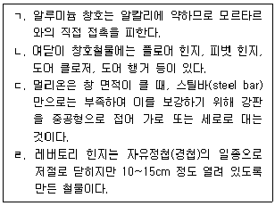
- ㄱ, ㄴ
- ㄱ, ㄷ
- ㄴ, ㄹ
- ㄷ, ㄹ
- ㄱ, ㄷ, ㄹ
(정답률: 알수없음)
100. 유리공사에 관한 설명으로 옳은 것은?
- 방탄유리는 접합유리의 일종이다.
- 가스켓은 유리의 간격을 유지하며 흡습제의 용기가 되는 재료를 말한다.
- 로이(Low-E)유리는 특수금속 코팅막을 실외측 유리의 외부면에 두어 단열효고를 극대화한 것이다.
- 강화유리는 판유리를 연화점 이하의 온도에서 열처리한 후 급랭시켜 유리 표면에 강한 압축응력 층을 만든 것이다.
- 배강도유리는 판유리를 연화점 이상의 온도에서 열처리한 후 서냉하여 유리 표면에 압축응력 층을 만든 것으로 내풍압이 우수하다.
(정답률: 알수없음)
101. 급수펌프를 1대에서 2대로 병렬 연결하여 운전 시 나타나는 현상으로 옳은 것은? (단, 펌프의 성능과 배관조건은 동일하다.)
- 유량이 2배로 증가하며 양정은 0.5배로 감소한다.
- 양정이 2배로 증가하며 유량은 변화가 없다.
- 유량이 1.5배로 증가하며 양정은 0.8배로 감소한다.
- 유량과 양정이 모두 증가하나 증가폭은 배관계 저항조건에 따라 달라진다.
- 배관계 저항조건에 따라 유량 또는 양정이 감소되는 경우가 있다.
(정답률: 알수없음)
102. 급수설비에 관한 내용으로 옳지 않은 것은?
- 기구급수부하단위는 같은 종류의 기구일 경우 공중용이 개인용보다 크다.
- 벽을 관통하는 배관의 위치에는 슬리브를 설치하는 것이 바람직하다.
- 고층건물에서는 급수계통을 조닝하는 것이 바람직하다.
- 펌프의 공동현상(cavitation)을 방지하기 위하여 펌프의 설치 위치를 수조의 수위보다 높게 하는 것이 바람직하다.
- 보급수의 경도가 높을수록 보일러 내면에 스케일 발생 가능성이 커진다.
(정답률: 알수없음)
103. 가스보일러 20℃의 물 3,000kg을 90℃로 올리기 위해 필요한 최소 가스량(m3)은? (단, 가스발열량은 40,000kJ/m3, 보일러 효율은 90%로 가정하고, 물의 비열은 4.2 kJ/kg·K로 한다.)
- 19.60
- 22.⑤
- 24.50
- 25.25
- 26.70
(정답률: 알수없음)
104. 중앙식 급탕설비에 관한 내용으로 옳은 것만 모두 고른 것은?
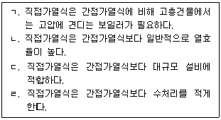
- ㄱ, ㄴ
- ㄴ, ㄹ
- ㄷ, ㄹ
- ㄱ, ㄴ, ㄷ
- ㄱ, ㄷ, ㄹ
(정답률: 알수없음)
1⑤. 건축설비의 용어에 관한 내용으로 옳지 않은 것은?
- 국부저항은 배관이나 덕트에서 직관부 이외의 구부러지는 부분, 분기부 등에서 발생하는 저항이다.
- 소켓은 같은 관경의 배관을 직선으로 접속할 때 사용한다.
- 서징현상은 배관 내를 흐르는 유체의 압력이 그 온도에서의 유체의 포화증기압보다 낮아질 경우 그 일부가 증발하여 기포가 발생하는 것이다.
- 비열은 어떤 물질의 질량 1kg을 온도 1℃ 올리는 데 필요한 열량이다.
- 고위발열량은 연료가 연소할 때 발생되는 수증기의 잠열을 포함한 총발열량이다.
(정답률: 알수없음)
106. 급수설비에 관한 설명으로 옳은 것은?
- 급수펌프의 회전수를 2배로 하면 양정은 8배가 된다.
- 펌프의 흡입양정이 작을수록 서징현상 방지에 유리하다.
- 펌프직송방식은 정전이 될 경우 비상발전기가 없어도 일정량의 급수가 가능하다.
- 고층건물의 급수 조닝방법으로 안전밸브를 설치하는 것이 있다.
- 먹는물 수질기준 및 검사 등에 관한 규칙상 먹는물의 수질기준 중 수돗물의 경도는 300mg/L를 넘지 않아야 한다.
(정답률: 알수없음)
107. 지역난방 방식의 특징에 관한 내용으로 옳지 않은 것은?
- 열병합발전인 경우에 미활용 에너지를 이용할 수 있어 에너지절약 효과가 있다.
- 단지 자체에 중앙난방 보일러를 설치하는 경우와 비교하여 단지의 난방 운용 인원수를 줄일 수 있다.
- 건물이 밀집되어 있을수록 배관매설비용일 줄어든다.
- 단지에 중앙난방 보일러를 설치하지 않으므로 기계실 면적을 줄일 수 있다.
- 건물이 플랜트로부터 멀리 떨어질수록 열매 반송 동력이 감소한다.
(정답률: 알수없음)
108. 옥내 배수관의 관경을 결정하는 방법으로 옳지 않은 것은?
- 옥내 배수관의 관경은 기구배수부하단위법 등에 의하여 결정할 수 있다.
- 기구배수부하단위는 각 기구의 최대 배수유량을 소변기 최대 배수유량으로 나눈 값에 동시사용률 등을 고려하여 결정한다.
- 배수 수평지관의 관경은 그것에 접속하는 트랩구경과 기구배수관의 관경과 같거나 커야 한다.
- 배수 수평지관은 배수가 흐르는 방향으로 관경을 축소하지 않는다.
- 배수 수직관의 관경은 가장 큰 배수부하를 담당하는 최하층 관경을 최상층까지 동일하게 적용한다.
(정답률: 알수없음)
109. 기구배수부하단위가 낮은 기구에서 높은 기구의 순서로 옳은 것은?
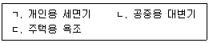
- ㄱ-ㄴ-ㄷ
- ㄱ-ㄷ-ㄴ
- ㄴ-ㄱ-ㄷ
- ㄷ-ㄱ-ㄴ
- ㄷ-ㄴ-ㄱ
(정답률: 알수없음)
110. 배수트랩의 구비조건에 관한 내용으로 옳지 않은 것은?
- 자기사이펀 작용이 원활하게 일어나야 한다.
- 하수 가스, 냄새의 역류를 방지하여야 한다.
- 포집길를 제외하고는 오수에 포함된 오물 등이 부착 및 침전하기 어려워야 한다.
- 봉수 깊이가 항상 유지되는 구조이어야 한다.
- 간단한 구조이어야 한다.
(정답률: 알수없음)
111. 바닥복사난방 방식에 관한 설명으로 옳지 않은 것은?
- 온풍난방 방식보다 천장이 높은 대공간에서도 난방효과가 좋다.
- 배관이 구조체에 매립되는 경우 열매체의 누설 시 유지보수가 어렵다.
- 대류난방, 온풍난방 방식보다 실의 예열시간이 길다.
- 실내의 상하 온도분포 차이가 커서 대류난방 방식보다 쾌적성이 좋지 않다.
- 바닥에 방열기를 설치하지 않아도 되므로 실의 바닥면적 이용도가 높아진다.
(정답률: 알수없음)
112. 다음은 하수도법령상의 내용이다. ( )에 들어갈 용어로 옳은 것은?
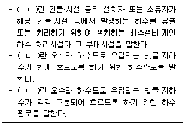
- ㄱ : 하수관로, ㄴ : 공공하수도, ㄷ : 개인하수도
- ㄱ : 개인하수도, ㄴ : 공공하수도, ㄷ : 합류식하수관로
- ㄱ : 공공하수도, ㄴ : 개인하수도, ㄷ : 합류식하수관로
- ㄱ : 공공하수도, ㄴ : 분류식하수관로, ㄷ : 개인하수도
- ㄱ : 개인하수도, ㄴ : 합류식하수관로, ㄷ : 분류식하수관로
(정답률: 알수없음)
113. 다음은 도시가스설비에서 가스계량기 설치에 관한 내용이다. ( )에 들어갈 숫자로 옳은 것은?
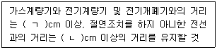
- ㄱ : 15, ㄴ : 30
- ㄱ : 30, ㄴ : 15
- ㄱ : 30, ㄴ : 60
- ㄱ : 60, ㄴ : 15
- ㄱ : 60, ㄴ : 30
(정답률: 알수없음)
114. 지능형 홈네트워크 설비 설치 및 기술기준에 관한 내용으로 옳지 않은 것은?
- 통신배관실의 출입문은 폭 0.7m, 높이 1.8m 이상(문틀의 내측치수)이어야 한다.
- 중형주택 이상의 무인택배함 설치수량은 세대수의 15~20% 정도 설치할 것을 권장한다.
- 차수판 또는 차수막을 설치하지 않은 통신배관실에는 최소 40mm 이상의 문턱을 설치하여야 한다.
- 단지네트워크장비는 집중구내통신실 또는 통신배관실에 설치하여야 한다.
- 가스감지기는 LNG인 경우에는 천장 쪽에, LPG인 경우에는 바닥 쪽에 설치하여야 한다.
(정답률: 알수없음)
115. 지능형 홈네트워크 설비 설치 및 기술기준에서 구분하고 잇는 홈네트워크사용기기가 아닌 것은?
- 무인택배시스템
- 세대단말기
- 감지기
- 전자출입시스템
- 원격검침시스템
(정답률: 알수없음)
116. 옥내배선 공사에 관한 내용으로 옳지 않은 것은?
- 금속관 공사는 철근콘크리트 구조의 매립공사에 사용된다.
- 합성수지관 공사는 옥내의 점검할 수 없는 은폐장소에도 사용이 가능하다.
- 버스 덕트 공사는 공장, 빌딩 등에서 비교적 큰 전류가 통하는 간선을 시설하는 경우에 사용된다.
- 금속 몰드 공사는 매립공사용으로 적합하고, 기계실 등에서 전동기로 배선하는 경우에 사용된다.
- 라이팅 덕트 공사는 화랑의 벽면조명과 같이 광원을 이동시킬 필요가 있는 경우에 사용된다.
(정답률: 알수없음)
117. 바닥면적이 100m2인 공동주택 관리사무소에 설치된 25개의 조명기구를 광원만 LED로 교체하여 평균조도 400럭스(lx)를 확보하고자 할 때, 조명기구의 개당 최소 광속(lm)은? (단, 조명률은 50%, 보수율은 0.8로 한다.)
- 3,000
- 3,500
- 4,000
- 4,500
- 5,000
(정답률: 알수없음)
118. 옥내소화전설비의 화재안전기준상 옥내소화전설비에 관한 내용으로 옳은 것을 모두 고른 것은?
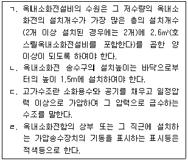
- ㄴ
- ㄱ, ㄷ
- ㄱ, ㄹ
- ㄴ, ㄷ, ㄹ
- ㄱ, ㄴ, ㄷ, ㄹ
(정답률: 알수없음)
119. 공동주택의 에너지절약을 위한 방버으로 옳지 않은 것은?
- 지하주차장의 환기용 팬은 이산화탄소(CO2) 농도에 의한 자동(on-off) 제어방식을 도입한다.
- 부하특성, 부하종류, 계절부하 등을 고려하여 변압기의 운전대수제어가 가능하도록 뱅크를 구성한다.
- 급수가압펌프의 전동기에는 가변속제어방식 등 에너지절약적 제어방식을 채택한다.
- 역률개선용 콘덴서를 집합 설치하는 경우에는 역률자동조절장치를 설치한다.
- 옥외등은 고효율 에너지기자재 인증제품으로 등록된 고휘도방전램프 또는 LED 램프를 사용한다.
(정답률: 알수없음)
120. 다음은 피난기구의 화재안전기준상 피난기구에 관한 내용이다. ( )에 들어갈 내용으로 옳은 것은?
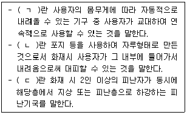
- ㄱ : 간이완강기, ㄴ : 구조대, ㄷ : 하향식 피난구용 내림식사다리
- ㄱ : 간이완강기, ㄴ : 공기안전매트, ㄷ : 다수인피난장비
- ㄱ : 완강기, ㄴ : 구조대, ㄷ : 다수인피난장비
- ㄱ : 완강기, ㄴ : 간이완강기, ㄷ : 하향식 피난구용 내림식사다리
- ㄱ : 승강기 피난기, ㄴ : 간이완강기, ㄷ : 다수인피난장비
(정답률: 알수없음)